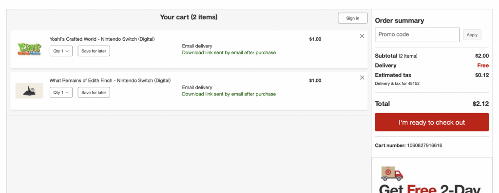

Kazuya's down tile (the one where you don't crouch) can be canceled with sheild before the hitbox comes out. You have almost no endlag when doing this, so you can fake a down-tilt to get your opponent to jump, then up-smash.
Target had an issue internally causing Yoshi's crafted word, a $59.99 video game, to be sold at just $1! Target fixed this in under an hour and disabled codes for everyone who bought them, but people who already downloaded the game got to keep it.
When opening the switch, you have to push any button 3 times in a row, and it makes a click sound. If you use ZL, ZR, the left stick, or the right stick to open the switch, it will make some fun sounds. Neat right?